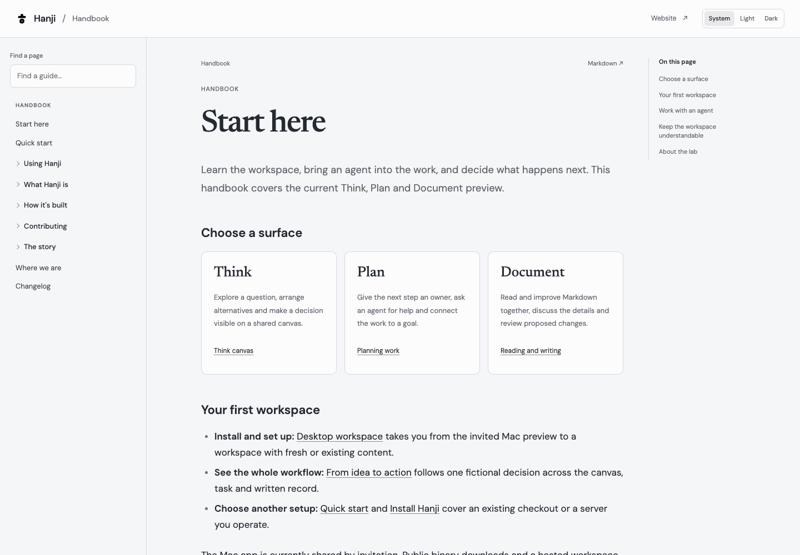
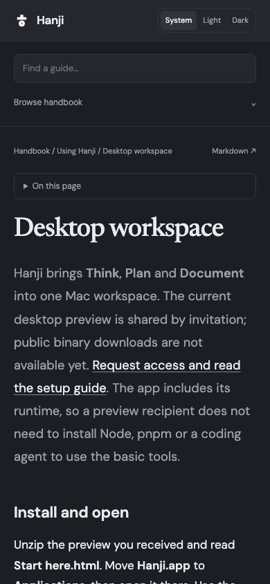

Hanji
HanjiPublish to the web
Some of what a team writes deserves an audience: the docs, the handbook, the pages you would happily show a customer. Hanji publishes exactly the content you have opened to everyone - and nothing else. The lock decides what goes; the exporter never widens it.
The site you are reading right now was made this way.
Choose, then publish
# 1. open what should be public (a mount, or just a folder)
pnpm hanji rule handbook everyone-read
# 2. render it
pnpm hanji export ./site
./site is now a complete static website in Hanji's look: your sidebar, your
reading order and dark mode. A small inline script remembers the theme choice;
reading and navigation also work without JavaScript. On a phone, Browse handbook
opens a native collapsible navigation panel so the article stays near the top;
a Skip to content link supports keyboard navigation. Beside every HTML page sits the
same page as plain Markdown, plus llms.txt and llms-full.txt at the root -
so the agents reading the open web get your writing as text, not scraped
pixels.
Put it on GitHub Pages
cd site
git init -b main && git add -A && git commit -m "Published with Hanji"
git remote add origin git@github.com:you/docs.git
git push origin main
# then: repository Settings → Pages → deploy from main
Publishing again is the same two commands: hanji export straight into that
clone (it cleans its own output and leaves .git alone), commit, push.
Make it yours
A few optional settings shape the published site, set once from the CLI:
pnpm hanji set export_home_url https://your.site/ # the crumb's way home
pnpm hanji set export_home_label YourSite
pnpm hanji set export_site_label Handbook # the crumb's right side
pnpm hanji set export_edit_base_url https://github.com/you/repo/edit/main/docs
With an edit base set, every published page ends with a quiet suggest an edit link straight into your repository's web editor - a reader spots a typo, clicks, and a pull request is two clicks away. The cheapest contribution funnel there is.
As an OKF bundle
Add --okf and the export is also an Open Knowledge Format bundle, the vendor-neutral Markdown-on-git shape other agent tools read:
pnpm hanji export ./bundle --okf
Every page ships as a concept document with a type in its frontmatter (Page by default; a page that sets its own type: keeps it), the reserved index.md files carry no frontmatter, and the bundle root declares okf_version. The static site and llms.txt still ride along. Your source in git is untouched, the OKF shaping happens only in the copy on disk.
What stays private
Everything without an everyone rule. A restricted folder inside an open mount stays dark, its pages and even its images never leave the building. If nothing is open at all, the exporter refuses loudly rather than shipping an empty site - you will never publish by accident.
This handbook’s publication
Maintainers can export only the handbook from an isolated publication state:
node --import tsx scripts/export-handbook.mjs /path/to/docs-artifact-checkout
node scripts/check-handbook-export.mjs /path/to/docs-artifact-checkout
This uses docs/handbook as the only mount. It does not change the rules of a
live workspace, copy other mounts or push a repository. Review the exported
HTML, assets and Markdown mirrors before committing the artifact. The marketing
site and this handbook have separate GitHub Pages deployments.
The published reading experience

The HTML export includes grouped navigation, a page-title finder and an on-page outline with stable section links. Previous and next links follow the exported navigation order. Each page links to its Markdown source. The page finder filters only titles and sections already present in the public navigation; it does not query the live workspace or index private content.
On smaller screens, guide navigation and the outline use native collapsible panels. Reading, navigation, section links and Markdown links work without JavaScript. JavaScript adds the title finder and explicit theme controls; without it the palette follows the system.
